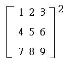
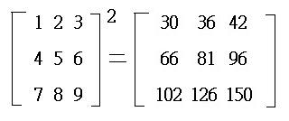
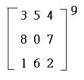

三階矩陣整數冪(I)
程式是由網友SuperMANganese提供。
程式一可以計算一個3×3矩陣的正整數冪(n>0)。
程式二同樣可以計算一個3×3矩陣的正整數冪，冪數包括零(n≧0)，程式二亦較程式一簡短一些，但運算時間會稍長一點。
程式三可以計算一個3×3矩陣的整數冪，即冪數包括零及負整數，速度與程式二相若，另外程式三亦計算三階行列式、逆矩陣及伴隨矩陣。
程式更新日期: 2011年11月8日
程式一(447 bytes，正整數冪數 n>0)
程式需要在 CMPLX 模式下執行，因此在選擇新程式位置後，按 2 選用CMPLX模式。
?→A: ?→D: ?→M: ?→X: E5A+X+Ai→A: ?→B: E-5D+E5B+Bi→B: ?→Y:
M+E-5Y→C: D+Mi→D: Y+Xi→X: ?→M: A+E-5M→A: ?→Y: B+Y→B:
M+Yi→Y: ?→M: C+E5M+Mi→C: ?→M: Fix 0: 3M-3: If Ans: Then
Lbl 1: For 0→M To 0 Step Ans: . 5(B+Conjg(B:Rnd(E-5Ans)(D+Conjg(D)) -
i(Rnd(Ans-E5Rnd(E-5Ans) )(D-Conjg(D)) + E5(Ans-Rnd(Ans))(A-Conjg(AM+:
. 5(C+Conjg(C:E5i(Ans-Rnd(Ans))(D+Conjg(D)) + Rnd(E-5Ans)(D-Conjg(D)) +
Rnd(Ans-E5Rnd(E-5Ans))(A-Conjg(AM+: . 5(A+Conjg(A: 2Ans +
iRnd(Ans-E5Rnd(E-5Ans))(D+Conjg(D)) + E5(Ans-Rnd(Ans))(D-Conjg(D)) +
Rnd(E-5Ans)(A-Conjg(A→A: X→D: Y→X: . 5M→Y: . 5A→M: B→A: C→B:
M→C:
0→M: Next: M-1 => Goto 1: IfEnd: Norm 1: - .
5i→M: Ans(A-Conjg(A◢
. 5(D+Conjg(D◢ i(Ans-D◢ M(X-Conjg(X◢ M(B-Conjg(B◢
.5(X+Conjg(X◢ . 5(Y+Conjg(Y◢ i(Ans-Y◢ M(C-Conjg(C
程式二(426 bytes，整數冪數 n≧0)
程式需要在 CMPLX 模式下執行，因此在選擇新程式位置後，按 2 選用CMPLX模式。
ClrMemory:?→A: ?→B: ?→C: E5A+B+E-5C+i→A: ?→B: ?→C: ?→M:
E-5B+E5C+M+i→B: ?→C: ?→M: C: ?→C: E-5M+Ans+E5C+i→C: ?→M: Fix 0: 3M:
If Ans: Then Lbl 1: For 0→M To 0 Step Ans: . 5(B+Conjg(B:Rnd(E-5Ans)
(D+Conjg(D)) - i(Rnd(Ans-E5Rnd(E-5Ans))(D-Conjg(D)) + E5(Ans-Rnd(Ans))
(A-Conjg(AM+: . 5(C+Conjg(C:E5i(Ans-Rnd(Ans))(D+Conjg(D)) + Rnd(E-5Ans)
(D-Conjg(D)) + Rnd(Ans-E5Rnd(E-5Ans))(A-Conjg(AM+: . 5(A+Conjg(A:
2Ans + iRnd(Ans-E5Rnd(E-5Ans))(D+Conjg(D)) + E5(Ans-Rnd(Ans))(D-Conjg(D)) +
Rnd(E-5Ans)(A-Conjg(A→A: X→D: Y→X: . 5M→Y: . 5A→M: B→A: C→B: M→C:
0→M: Next: M-1 => Goto 1: IfEnd: Norm 1: - . 5i(A-Conjg(A◢ - . 5i(X-Conjg(X◢
. 5(Y+Conjg(Y◢ . 5(D+Conjg(D◢ - . 5i(B-Conjg(B◢ - . 5i(Y-Conjg(Y◢
- . 5i(D-Conjg(D◢ . 5(X+Conjg(X◢ - . 5i(C-Conjg(C
程式三(668 bytes，任何整數冪n)
程式需要在 CMPLX 模式下執行，因此在選擇新程式位置後，按 2 選用CMPLX模式。
ClrMemory:?→A: ?→B: ?→C: E5A+B+E-5C+i→A: ?→B: ?→C: ?→M:
E-5B+E5C+M+i→B: ?→C: ?→M: C: ?→C: E-5M+Ans+E5C+i→C: ?→M: Fix 0:
Abs( 3M: If Ans: Then Lbl 1: For 0→M To 0 Step Ans: . 5(B+Conjg(B:Rnd(E-5Ans)
(D+Conjg(D)) - i(Rnd(Ans-E5Rnd(E-5Ans))(D-Conjg(D)) + E5(Ans-Rnd(Ans))
(A-Conjg(AM+: . 5(C+Conjg(C:E5i(Ans-Rnd(Ans))(D+Conjg(D)) + Rnd(E-5Ans)
(D-Conjg(D)) + Rnd(Ans-E5Rnd(E-5Ans))(A-Conjg(AM+: . 5(A+Conjg(A:
2Ans + iRnd(Ans-E5Rnd(E-5Ans))(D+Conjg(D)) + E5(Ans-Rnd(Ans))(D-Conjg(D)) +
Rnd(E-5Ans)(A-Conjg(A→A: X→D: Y→X: . 5M→Y: . 5A→M: B→A: C→B: M→C:
0→M: Next: M-1 => Goto 1: IfEnd: Norm 1: MM-: - . 5i(A-Conjg(A→A◢
- . 5i(X-Conjg(X◢ . 5(Y-Conjg(YM+: Y-Ans→Y◢ . 5(D+Conjg(D[M+]◢
i(Ans-D→D: - . 5i(B-Conjg(B→B◢ - . 5i(M-Conjg(M◢ D◢ . 5(X+Conjg(X◢
- . 5i(C-Conjg(C→C◢ M+Conjg(M: ABC-YBD + 4-1(YAns(X+Conjg(X)) -
D(X-Conjg(X))(M-Conjg(M)) + Ai(M-Conjg(M))(X+Conjg(X)) + CAnsi(X-Conjg(X◢
BC + 4-1i(M-Conjg(M))(X+Conjg(X◢ . 5(M+Conjg(M: - CAns-Di(M-Ans◢
-BD + 4-1(M+Conjg(M))(X+Conjg(X◢ . 5(X+Conjg(X:YAns+Ci(X-Ans◢ AC-YD◢
. 5(X+Conjg(X: -AAns - Di(X-Ans◢ -BY - 4-1(X-Conjg(X))(M-Conjg(M◢
. 5(M+Conjg(M:Y Ans + Ai(M-Ans◢ AB + 4-1(M+Conjg(M))i(X-Conjg(X
註1: 程式三會先找出正整數冪的矩陣，然後再找出其逆矩陣。
註2: 原矩陣中的數字須為整數，輸入範圍: -50000<x<50000。
例題1: 計算

按 Prog 1 再按 1 EXE 2 EXE 3 EXE 4 EXE 5 EXE 6 EXE 7 EXE 8 EXE 9 EXE 2 EXE
(顯示30) EXE (顯示36) EXE (顯示42) EXE (顯示66) EXE (顯示 81)
EXE (顯示 96) EXE (顯示 102) EXE (顯示 126) EXE (顯示 150)
所以答案為

例題2: 計算

按 Prog 1 再按 3 EXE 5 EXE 4 EXE 8 EXE 0 EXE 7 EXE 1 EXE 6 EXE 2 EXE 9 EXE
(顯示1580876851) EXE (顯示1545817735) EXE (顯示1731636235) EXE (顯示1820264835) EXE (顯示
1743178616)
EXE (顯示 1985285770) EXE (顯示 1249213485) EXE (顯示 1235213845) EXE (顯示 1371541616)
所以答案為
例題3(只限程式三): 計算
按 Prog 1 再按 1 EXE 2 EXE 3 EXE 4 EXE 5 EXE 4 EXE 3 EXE 2 EXE 1 EXE -2 EXE
EXE EXE EXE EXE EXE EXE EXE EXE EXE (忽略正數冪的答案矩陣) (顯示64，矩陣行列式) EXE
(顯示90) EXE (顯示-144) EXE (顯示74) EXE (顯示-72) EXE (顯示 128)
EXE (顯示 -72) EXE (顯示 74) EXE (顯示 -144) EXE (顯示 90)
所以答案為
返回 CASIO fx-50FH、fx-3650P II、fx-50FH II及fx-50F PLUS 程式集